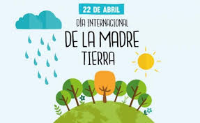
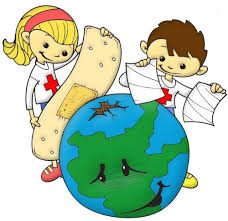
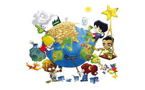
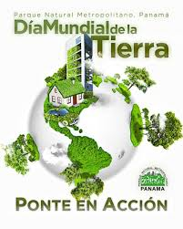
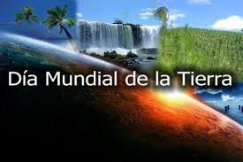

Día Internacional de la Madre Tierra 22 de Abril
- 
-

-

- 
- 
-

- 
Realizado por:
Esmeralda Lezama Flores
4° "F"
Especialidad:
Programación
Submódulo:
Desarrolla Aplicaciones Móviles
Docente:
Lic. José Antonio Gómez Hernández
4° "F"
Programación
Desarrolla Aplicaciones Móviles
Lic. José Antonio Gómez Hernández
Celebramos el Día Internacional de la madre tierra para recordar que el planeta y sus ecosistemas nos dan la vida y el de sustento. Con este día , asumimos ,además, la responsabilidad colectiva, como nos recordaba la Declaración de Río de 1992, de fomentar esta armonía con la naturaleza y la madre tierra. Este día nos brinda también la oportunidad de concienciar a todos los habitantes del planeta acerca de los problemas que afectan a la tierra y a las diferentes formas de vida que en él se desarrollan.
En 1970, un ciudadano estadounidense sugirió que el 22 de abril se celebrara, con una marcha, el día de la Tierra. Su nombre era Gaylord Nelson, senador demócrata y activista. Pero él, más allá de definir una fecha para conmemorar la importancia del planeta, tenía un objetivo: generar presión en el sector público para crear una agencia ambiental a nivel federal en EE.UU. Y, efectivamente, logró su cometido. Pues gracias al evento, donde asistieron cerca de dos mil universidades y diez mil escuelas, el gobierno estadounidense creó la Agencia de Protección Ambiental: una institución que, más tarde, apoyaría leyes para la preservación del medio ambiente. Inclusive, el hecho de que asistieran tantas personas a la marcha, también tenía una razón. Nelson había escogido el 22 de abril porque era un día que no coincidía ni con exámenes ni con vacaciones, ni con ninguna otra eventualidad. Y los estudiantes, especuló el senador, eran quienes más apoyaban las causas ambientales, así que no podían faltar a la manifestación. Fue así como el primer día de la Tierra se celebró en Estados Unidos, el 22 de abril de 1970. Desde entonces, esta fecha recuerda el valor del lugar en que habitamos y por qué es importante preservarlo. Una pregunta, aparentemente, sencilla de responder, luego de conocer algunas cifras sobre la Tierra.
El domingo pasado 22 de abril se celebró el Día Internacional de la Madre Tierra, desde la CEDU participamos a través de la difusión y compromiso en la búsqueda de un justo equilibro entre las necesidades económicas, sociales y ambientales de las generaciones presentes y futuras, promoviendo una cultura armónica con la naturaleza y Madre Tierra. «Madre Tierra» es una expresión común utilizada para referirse al Planeta Tierra en diversos países y regiones, lo que demuestra la interdependencia existente entre los seres humanos, las demás especies vivas y el planeta que todos habitamos. La Tierra y sus ecosistemas son nuestro hogar. Para alcanzar un justo equilibrio entre las necesidades económicas, sociales y ambientales de las generaciones presentes y futuras, es necesario promover la armonía con la naturaleza y el planeta. Celebramos el Día Internacional de la Madre Tierra para recordar que el planeta y sus ecosistemas nos dan la vida y el sustento. Con este día, asumimos, además, la responsabilidad colectiva, como nos recordaba la Declaración de Río de 1992, de fomentar esta armonía con la naturaleza y la Madre Tierra. Este día nos brinda también la oportunidad de concienciar a todos los habitantes del planeta acerca de los problemas que afectan a la Tierra y a las diferentes formas de vida que en él se desarrollan.
El 23 de abril de 2018 se realizó en la sede de las Naciones Unidas en Nueva York, el 8° Diálogo Interactivo sobre Armonía con la Naturaleza, en ocasión de la conmemoración del Día Internacional de la Madre Tierra. El evento fue convenido por el Presidente de la Asamblea General, Miroslav Lajcak, quien destacó la importancia del Diálogo para intercambiar ideas sobre desarrollo y patrones de producción y consumo sostenibles en armonía con la naturaleza. Durante la jornada, se discutió sobre cómo los marcos legales y económicos de la Jurisprudencia de la Tierra impactan la implementación de patrones de producción y consumo sostenibles en Armonía con la Naturaleza. El Diálogo se realizó con el objetivo de inspirar a los ciudadanos y las sociedades a reconsiderar la relación que mantienen con la naturaleza, acorde a la meta 12.8 de los Objetivos de Desarrollo Sostenible con respecto a los patrones de consumo y producción sostenibles. Mejorar la base ética de la relación entre la especie humana y la Tierra en el contexto del desarrollo sostenible no es solo beneficioso, sino también necesario.
El paquete de medidas estratégicas diseñado por el quinteto de organizaciones ecologistas está compuesto por 17 demandas que abarcan medidas transversales que trascienden el medioambiente y van más allá con el fin de facilitar la transformación de todo el sistema. En concreto, tal y como anunciaron los responsables de estas ONG durante la presentación de Un programa por la Tierra. Demandas para una legislatura sostenible, lo que defienden con estas 17 propuestas es lograr que la «sostenibilidad del modelo económico, las políticas centradas en la justicia social y ambiental y las medidas para generar un nuevo modelo de producción y consumo, con generación de empleo ligado al cuidado y mejora ambiental» marquen el camino en la nueva etapa política. De forma resumida, estas son las 17 demandas: